OIL PUMP > REMOVAL |
| 1. REMOVE ENGINE ASSEMBLY |
Remove the engine assembly (Click here).
| 2. REMOVE IGNITION COIL ASSEMBLY |
Disconnect the 6 ignition coil connectors.
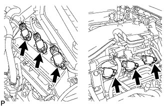 |
Remove the 6 bolts and 6 ignition coils.
| 3. REMOVE SPARK PLUG |
Remove the 6 spark plugs.
| 4. REMOVE VVT SENSOR (for Bank 1) |
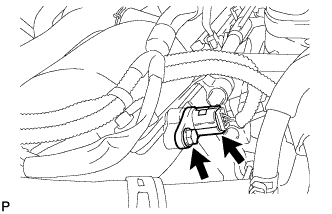 |
Disconnect the sensor connector.
Remove the bolt and sensor.
| 5. REMOVE VVT SENSOR (for Bank 2) |
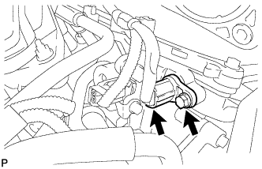 |
Disconnect the sensor connector.
Remove the bolt and sensor.
| 6. REMOVE CAMSHAFT TIMING OIL CONTROL VALVE ASSEMBLY LH |
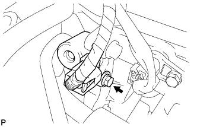 |
Disconnect the oil control valve connector.
Remove the bolt and oil control valve.
Remove the O-ring from the oil control valve.
| 7. REMOVE CAMSHAFT TIMING OIL CONTROL VALVE ASSEMBLY RH |
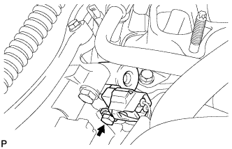 |
Disconnect the oil control valve connector.
Remove the bolt and oil control valve.
Remove the O-ring from the oil control valve.
| 8. REMOVE CYLINDER HEAD COVER SUB-ASSEMBLY LH |
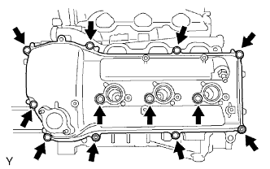 |
Remove the 10 bolts, 3 seal washers, 2 nuts, cylinder head cover and gasket.
| 9. REMOVE CYLINDER HEAD COVER SUB-ASSEMBLY |
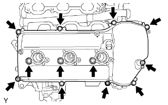 |
Remove the 10 bolts, 3 seal washers, 2 nuts, cylinder head cover and gasket.
| 10. REMOVE ENGINE OIL LEVEL DIPSTICK GUIDE |
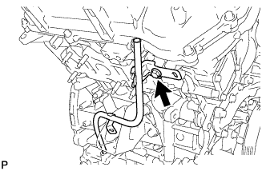 |
Remove the bolt and dipstick guide.
Remove the O-ring from the dipstick guide.
| 11. REMOVE V-RIBBED BELT TENSIONER ASSEMBLY |
 |
Remove the 5 bolts and V-ribbed belt tensioner.
| 12. REMOVE NO. 2 IDLER PULLEY SUB-ASSEMBLY |
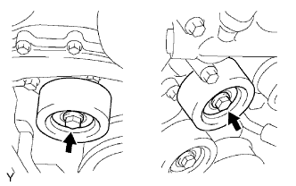 |
Remove the 2 bolts, 2 cover plates and 2 idler pulleys.
| 13. REMOVE NO. 1 IDLER PULLEY SUB-ASSEMBLY |
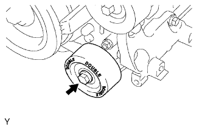 |
Remove the bolt and No. 1 idler pulley.
| 14. REMOVE CRANKSHAFT PULLEY |
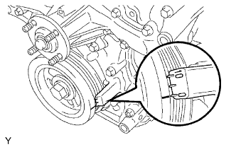 |
Turn the crankshaft pulley, and align the notch with the timing mark "0" of the timing chain cover.
 |
Check that the timing marks of the camshaft timing gears and sprockets are aligned with the timing marks of the bearing caps as shown in the illustration.
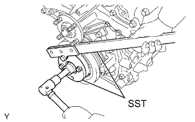 |
Using SST, hold the crankshaft pulley and loosen the pulley set bolt.
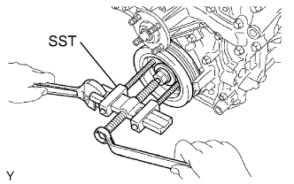 |
Using the pulley set bolt and SST, remove the crankshaft pulley.
| 15. REMOVE NO. 2 OIL PAN SUB-ASSEMBLY |
 |
Remove the 10 bolts and 2 nuts.
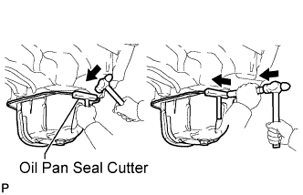 |
Insert the blade of an oil pan seal cutter between the oil pans. Cut through the applied sealer and remove the No. 2 oil pan.
| 16. REMOVE OIL STRAINER SUB-ASSEMBLY |
 |
Remove the 2 nuts, oil strainer and gasket.
| 17. REMOVE OIL PAN SUB-ASSEMBLY |
 |
Remove the 17 bolts (A, B and C) and 2 nuts.
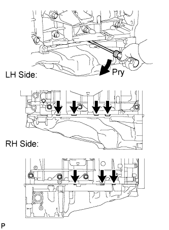 |
Using a screwdriver, remove the oil pan by prying between the oil pan and cylinder block as shown in the illustration.
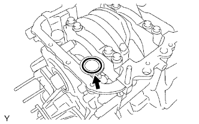 |
Remove the O-ring from the timing chain cover.
| 18. DISCONNECT NO. 2 OIL COOLER HOSE |
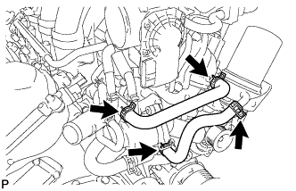 |
Remove the oil cooler hose.
| 19. DISCONNECT OIL COOLER HOSE |
Remove the oil cooler hose.
| 20. REMOVE WATER INLET HOUSING |
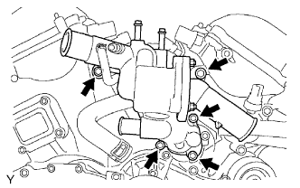 |
Remove the 5 bolts and water inlet housing.
Remove the O-ring and gasket from the water outlet pipe and water pump.
| 21. REMOVE OIL FILTER BRACKET SUB-ASSEMBLY |
 |
Remove the 3 bolts, 2 nuts, oil filter bracket and O-ring.
| 22. REMOVE TIMING CHAIN COVER SUB-ASSEMBLY |
 |
Remove the 24 bolts labeled A and B, and the 2 nuts.
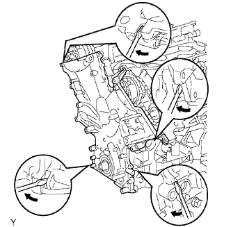 |
Remove the timing chain cover by prying between the timing chain cover and cylinder head or cylinder block with a screwdriver.
Remove the O-ring from the cylinder head LH side.
| 23. REMOVE FRONT CRANKSHAFT OIL SEAL |
If the timing chain case is removed:
Using a screwdriver and wooden block, pry out the oil seal.